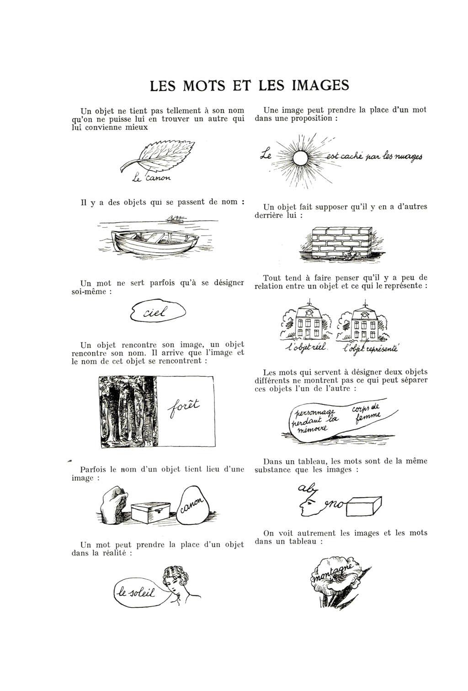
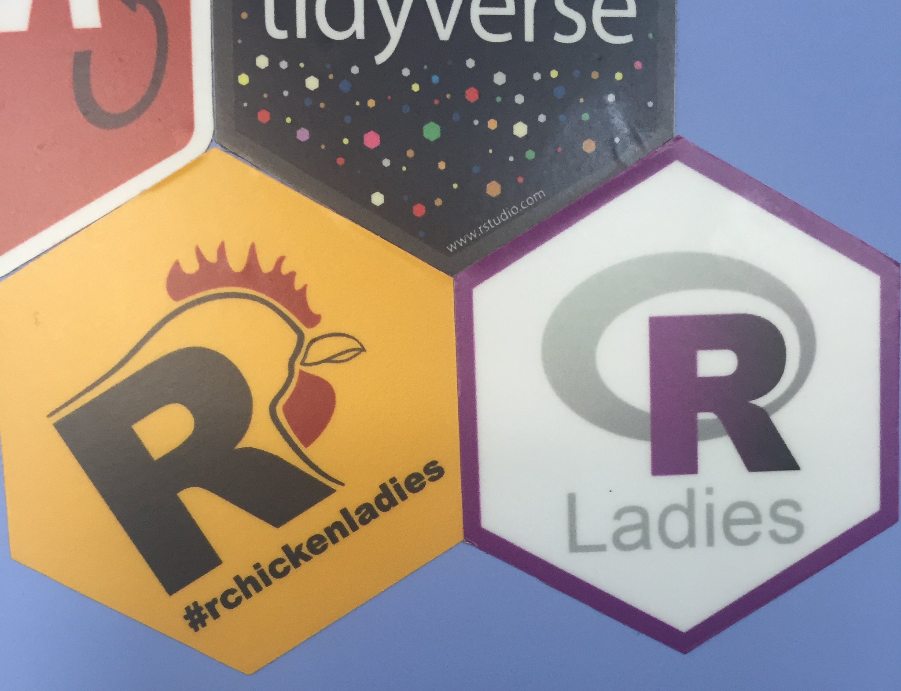

We both recently attended useR!2017 in Brussels. It was a blast to say the least. We’re going to tag team to cover our favorite things & the lessons we learned while adventuring across the Atlantic.
Location
Lucy: Brussels was incredible. The r emo::ji("beer") was delectable and the people were delightful.
This proved to be particularly useful when we temporally misplaced our travel buddy Jacquelyn on our way from the r emo::ji("airplane") - we conveniently followed the signs to wifi!
It was quite simple to navigate, and as an added bonus the conference had set up lovely bread-crumb-esque signs from the train station to the main site at the Wild Gallery, making it even easier for the directionally challenged or GPS-less conference attendees.
 Magritte, 1929, Les mots et les images, p. 32
As an added bonus, the Magritte Museum is in Brussels. After Aussie Nick rocked the conference’s closing remarks, we were able to pay homage to the original %>% master himself. Magritte created some of my favorite surrealism pieces, but here we were also able to see some beautiful works from his brief Impressionist phase - they were incredibly charming! The Magritte Museum also houses Les Mots et Les Images, Magritte’s article in the surrealist journal La révolution surréaliste on words and images, a piece that speaks straight to my r emo::ji("heart") given my present emoji-craze. r emo::ji("construction") A potential blog post coming on this soon r emo::ji("construction").
Nick: Brussels and Belgium are located about as conveniently in Europe as one could hope. Bordered by the Netherlands, Germany, France, and Luxembourg and just short train ride from all of them, one couldn’t ask for a better location. This centrality seemed to enable lots of people to attended that might not otherwise have. Due to this, and the fact that all other countries seem to have realized Americans won’t learn their languages and thus have learned English, I was able to interact with people from all over the globe. Sitting at dinner having a chat with someone from the Netherlands on one side, France on another and across from an Aussie is a pretty nice experience. While this may be obvious, it is easy to get subsumed into your own little bubble at your institution. Hearing about the amazing work being done by others elsewhere, motivated by their own unique cultural or environmental issues, was great for my sheltered Tennessee mind and inspiring.
Some may be annoyed by the fact that the conference won’t be back in the US next year but I personally think this is beneficial.
Besides, Nick Tierney may have told me that conference transportation next year will be provided by Kangaroos and Ostriches, so like, that’s worth it.
As Angela Merkel has similarly expressed recently, the US is slipping a bit in its hold on the “go-to” place.
This big network diagram had champagne at the bottom, so that was cool.
Favorite Talks
Nick:
We both gave talks, Lucy spoke about a shiny app we created called papr and Nick spoke about a new package for shiny development called shinysense.
I have never been to a conference where almost every single talk I went to was as high-quality and fantastic as useR. I truly learned something at every single one and can’t wait to apply the concepts to my own R and statistics related projects. Obviously I can’t write up a thing on 30 different talks so I’ll include a randomly selected few that stuck out to me.
shiny.collections: Google Docs-like live collaboration in Shiny
by Marek Rogala:
Shiny is fantastic for getting people with no web programming experience up and running with web-apps in minutes, but because of that often some of the more advanced features of web-apps such as reactive database connections can be nearly impossible to add (even for people like me with more web experience). The shiny.collections package addresses this by making it amazingly easy to spin up an app with an auto-updating database back-end. Believe me when I say this is not easy to do in a traditional web programming setup. This is fantastically exciting because the tool is easy enough to use for beginners but legitimately very helpful for all skill ranges. The number of applications I have dreamed up to use with this is vast. In addition, in a testament to his bravery and also the crazy ease of using the package, Marek did a live coding demo while on stage in front of more than 100 people! Having just spoken on that stage prior I can say he is much braver than I.
Can you keep a secret?
by Andrie de Vries:
The second you start working with other people on any project that involves sensitive information (api-keys etc) you realize the limitations of a public git-based workflow. You can’t commit all_my_sensitive_info.txt to the repo (although that certainly hasn’t stopped me) so you end up having to engage in an intricate and delicate dance of figuring out how to .gitignore the right files and also share their format between all your collaborators.
Again a live coding demo was performed showing just how easy it is to use. Apparently useRs are abnormally brave people.
Essentially it’s miserable and I don’t recommend it. secret is another mind-blowingly easy to use R package for committing this info straight to your public repo while keeping is secure via encryption. You just need to gather public ssh keys from your collaborators. Then once the collaborator clones the repo they just need to run the code like normal and it works, no dangerous .gitignore dance to be performed, especially if you do something like change a secret. It can not be stressed helpful this will be in my future workflow.
bsplus: Using Twitter Bootstrap to extend your Shiny app
by Ian Lyttle:
“The user benefits from me doing as little as possible” was a quote Ian emphasized in his talk, but I think this is incorrect. Perhaps a more accurate statement would be “the user benefits from me knowing how to take the best parts of bootstrap and port them in an easy-to-use and efficient way to R”. bsplus is a series of lightweight wrappers around the firmly established web-styling framework bootstrap by Twitter. A great UI for shiny or rmarkdown reports is not only a way to look professional but also important in encouraging new users to the platform. If you can make a shiny app in twenty minutes that takes an experienced web-developer a week to implement you’re making a pretty darn strong case for the adoption of shiny into your workflow. bsplus is a fantastic contribution to continuing shiny’s charge forward as the go-to way to make professional quality apps fast and easy.
Lucy: Nick and I shared many favorites! A few others that warrant mentioning:
How we built a Shiny App for 700 users?
Olga walked through a Shiny application she built for a client that has 700+ daily users! She highlighted that the prototype for this app was delivered in just one day, with a working demo deployed in 2 weeks - this is one of my favorite things about Shiny - the ability to get something in the r emo::ji("open_hands") of a collaborator quickly! She demonstrated the shiny.semantic package - a semantic UI wrapper for Shiny. It creates simply beautiful output. Between this and shiny.connections, the Appsilon team are creating awesome Shiny resources.
R-Ladies Global Community
by Alice Daish and Hannah Frick
 VERY pleased that #rchickenladies is out in the wild.
The R-Ladies Global team did an excellent job presenting the current state of this organization. Beginning in 2012 in San Francisco with Gabby, we’ve grown to:
r emo::ji("globe") 20+ countries
r emo::ji("cityscape") 45+ cities
r emo::ji("dancing_women") 6000+ members
r emo::ji("globe_with_meridians") a website rladies.org
r emo::ji("speaking_head") a repository for #RLadies speakers
It was such a delight to be able to meet so many women I’ve collaborated online with!
AMAZING #RLadies at #useR2017 💜🌍 inspiring #rstats work around the world pic.twitter.com/pIPEorlkyl
— R-Ladies Global (@RLadiesGlobal) July 5, 2017
Okay, I had to do an update after the recordings were released to briefly highlight a few more exquisite talks we missed!
The R6 Class System
only 508 lines of code!
Winston gave a fantastic talk on R6, a lightweight package that allows for encapsulated/classical object-oriented programming in R. This is something I am quite interested in learning more about, so it was delightful to hear him explain it!
FFTrees: An R package to create, visualise and use fast and frugal decision trees
by Nathaniel Phillips
This talk goes a bit against the name of our blog, but I am quite interested in decision theory and this talk was very well delivered! My favorite part was the final slide - a tree that describes how you should decide whether a fast and frugal tree is good for your problem domain.
v meta - a decision tree about when to use a decision tree.
R in Minecraft
by David Smith
I would be remiss not to mention the Minecraft talk - complete with slides built in Minecraft! David & crew spent the rOpenSci unconf building this awesome package and associated book to help teach kids how to use R.
Take Away
Lucy: It is always so fun to to get together in person with the visionaries of this language I love! Not only is it an incredible opportunity to learn through the presentations, but also through the small conversations over drinks in the evenings, or over r emo::ji("coffee") during the breaks, or on the r emo::ji("train") to a fun destination. Aside from the planned content, I learned about things such as Miles’ initiative to start a community-wide discussion about interactive visualizations, Jim’s suggestions on some better git aliases, and that Ian knows every word to R.E.M’s It’s the End of the World as We Know It. It is seriously such a special experience to all be in the same place, even if just for a few days.
Nick: This was my first R related conference and I can with 100% certainty say it will not be my last. I have had my feet dipped in both the R and Javascript communities for a while now, while never fully diving into either. Now I feel much more comfortable diving full on into the R community. UseR helped humanize all of the people I follow on twitter/ other places and in doing so was an overwhelmingly positive experience. I have never seen a community more uniformly kind, thoughtful and humble. No one blew off the obscure graduate student coming up to talk to them about their work, they were all willing to provide advice or just have philosophical talks about statistics and R’s role in the world. This certainly is correlated with the opensource nature of the language, but adjusting for this in my mental model still leaves a good proportion of variation to be explained by whatever latent variable I have not yet thought of. Seeing the selfless work that these people do and the impacts it has had on the world of data-science, statistics and scientific communication is inspiring and I believe endows R with a non-tangible but powerful advantage over many other languages.
Non-Conference Fun
Nick: As we found out quickly, one does not simply go to Brussels without taking a trip to Bruges. While at the train station Lucy, Jacquelyn, Nick Tierney and I were surprised by Ian Lyttle randomly gracing our presence having (lucky for us) just missed the earlier train. We all loaded into the clean smooth train and set off to Bruges. While there I set aside all desire to remain “cool” and went full tourist mode and it was fantastic.

{kind=link}
{kind=link}
{kind=link}
{kind=link}
{kind=link}
Lucy: After Bruges, we ventured off to Iceland r emo::ji("iceland") for a few days. It was absolutely magical. Icelandair has a great stopover program where you can book a flight with an extended stopover for the same cost as an ordinary layover – it was marvelous – this may become a new tradition for my European travel.
{kind=link}
{kind=link}